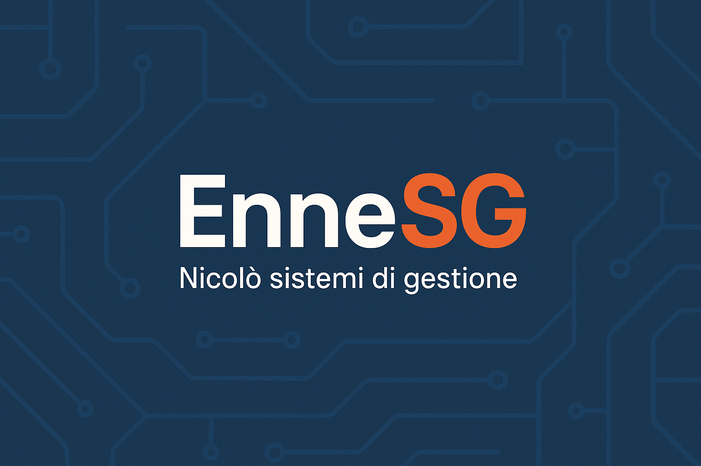

Consulenza SG • ISO • Sicurezza
Accompagniamo PMI e organizzazioni nell’implementazione di sistemi di gestione ISO e Sicurezza nel lavoro, integrando processi digitali e HSE.
Prenota un confrontoSistemi di gestione semplici, digitali e concreti.
Accompagniamo le imprese verso una gestione integrata della qualità, dell’ambiente e della sicurezza, con strumenti digitali e approccio operativo orientato ai risultati.
Servizi
Consulenza
Progettiamo e manteniamo sistemi qualità, ambiente e sicurezza, integrando la parte digitale per un controllo efficiente e reale dei processi.
Sistemi di Gestione Integrati
ISO 9001, ISO 14001, ISO 45001, integrati in un unico sistema coerente e operativo.
Audit e formazione
Audit interni, formazione e supporto operativo continuo per la crescita del sistema aziendale.
Contatti
Scrivici i tuoi obiettivi: ti rispondiamo entro 24h con un primo orientamento gratuito.
- domeniko.nikolo@gmail.com
- WhatsApp +39 375 671 6804
- Via Emilio Alessandrini 3, 85028 Rionero in Vulture (PZ)